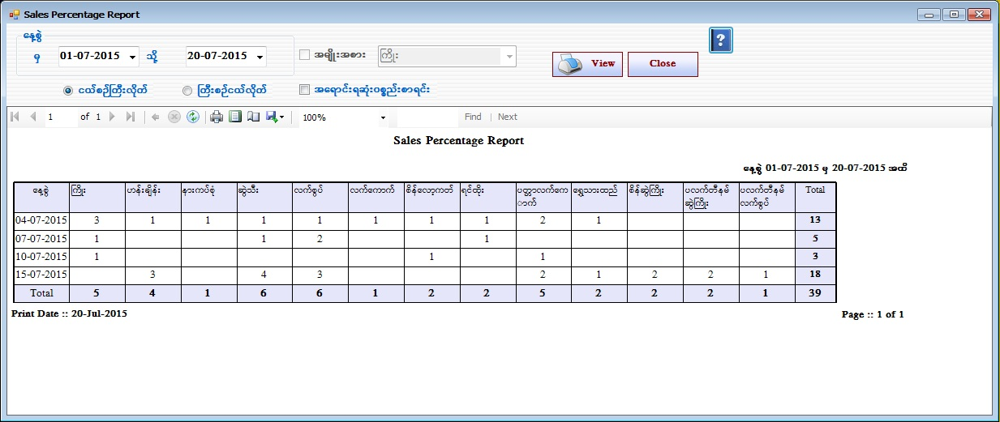
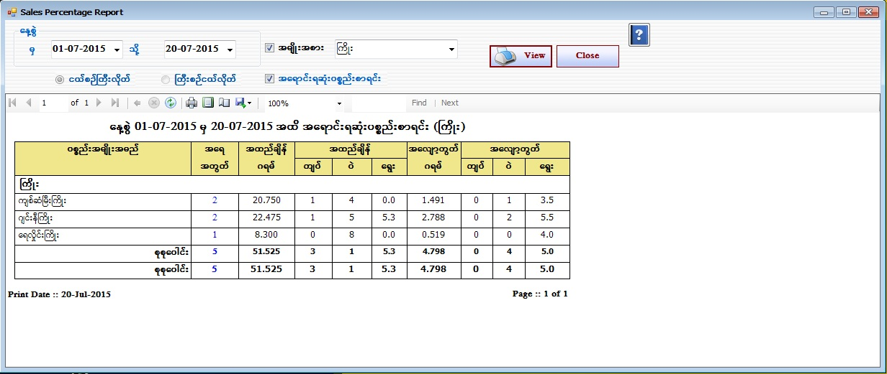

Sale Percentage Report


- Reports အောက်ရှိ Sales Percentage Form ကိုဖွင့်ပါ။
- Sale Percentage Form သည် မိမိရွေးချယ်ထားသော နေ့အတွင်း ရောင်းရသောပစ္စည်းများကို နေ့စွဲအလိုက် ကြည့်သော Form ဖြစ်သည်။
- နေ့စွဲကိုရွေးချယ်ပြီး ကြီးစဉ်ငယ်လိုက် (သို့) ငယ်စဉ်ကြီးလိုက် စာရင်းချုပ် ကြည့်ရှုနိုင်ပါသည်။ အရောင်းရဆုံး ပစ္စည်းစာရင်းကိုလည်း ကြည့်ရှုနိုင်ပါသည်။
- အရောင်းရဆုံးပစ္စည်းစာရင်းကို ကြည့်လိုပါက နေ့စွဲကို ရွေးချယ်ပါ ။ အရောင်းရဆုံးပစ္စည်းစာရင်း Check Box ကို on ပါ။ ထို့နောက် View Button ကို နှိပ်ပြီး ကြည့်ရှုနိုင်ပါသည်။ အမျိုးအစားအလိုက် ကြည့်ချင်ပါက အမျိုးအစား Check Box ကို on ပြီးကြည့်ရှုနိုင်ပါသည်။